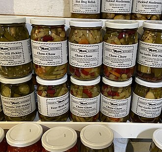

Chow-Chow

Jars of chow chow relish are lined up on a shelf.
Chow chow is a type of condiment relish that is very common in the Deep South of the United States.
Depending on state or region or even personal taste, it can range from mild and sweet to very spicy.
Most commonly, it is both sweet and a little spicy.
Variety is not just seen in the taste--it may also be finely chopped or in fairly large chunks, similar
to giardiniera. The ingredients themselves tend to vary based on what is typically grown in the region
where it is made and regional tastes. This recipe is a typical Western North Carolina mountain recipe.
This recipe is a canning version. There are other versions that are fermented instead of canned.
Ingredients
- 1 small head green cabbage, finely chopped
- 6-8 green tomatoes, finely chopped
- 6 medium green peppers, finely chopped
- 6 large onions, finely chopped
- 2-3 hot banana peppers, finely chopped, optional
- 1/4 cup canning or pickling salt
- 3-5 cups white vinegar
- 2-3 cups sugar
- 1 tablespoon celery seed
- 1 tablespoon mustard seed
Steps
- Finely chop all ingredients. Place in a large bowl, mix in the salt, and let it
sit covered in the refrigerator for 8-12 hours, or overnight, to draw the water out of the vegetables.
- Drain the vegetables well and squeeze out excess moisture.
- In a large pot bring the vinegar, sugar, and spices to a boil. Add the drained vegetables,
return to a boil, then reduce the heat and simmer for 10-20 minutes, until the vegetables are tender.
- Pack the hot misture into sterilized jars, leaving 1/4 inch head space, and seal.
- Process the jars in a boiling water bath for 10 minutes. This step may be skipped if not intending to keep
them stored long-term.
Home